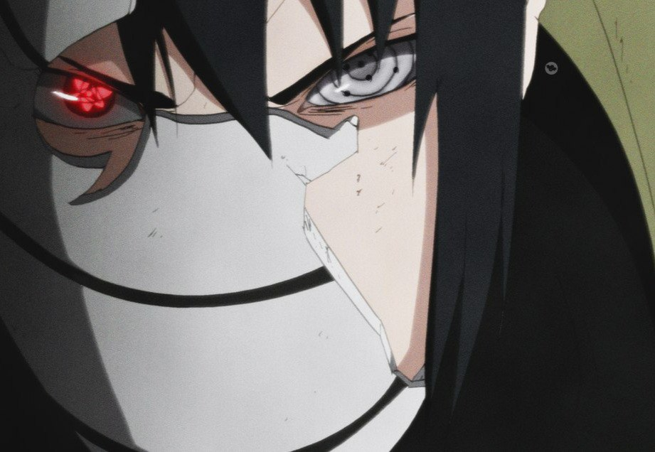

Sasuke Uchiha

Sasuke Uchiha (うちはサスケ, Uchiha Sasuke) is one of the last surviving members of Konohagakure's Uchiha
clan. After his older brother, Itachi, slaughtered their clan, Sasuke made it his mission in life to avenge them by killing Itachi. He is added to Team 7 upon becoming a ninja and, through competition with his rival and best friend, Naruto Uzumaki, Sasuke starts developing his skills. Dissatisfied with his progress, he defects from Konoha so that he can acquire the strength needed to exact his revenge. His years of seeking vengeance and his actions that followed become increasingly demanding, irrational and isolates him from others, leading him to be branded as an international criminal. After learning the truth of his brother's sacrifice and later proving instrumental in ending the Fourth Shinobi World War and being happily redeemed by Naruto, Sasuke decides to return to Konoha and dedicates his life to help protect the village and its inhabitants becoming referred to as the "Supporting Kage" (支う影, Sasaukage, Literally meaning: Supporting Shadow)
Abilities
Like his older brother Itachi, Sasuke is recognised as a natural prodigy of the Uchiha clan, graduating at the top of his class in the Academy. He makes a strong impression on Kakashi Hatake in the bell test, and could fight on par with strong shinobi, such as Haku and Gaara in Part I. After being under Orochimaru's tutelage for two-and-a-half years, Sasuke becomes strong enough to fight and even pressure Akatsuki member Itachi, as well as the Fourth Raikage. With the Six Paths Chakra, he is compared to the Sage of Six Paths
by Kurama, which is demonstrated when he helped overwhelm Madara as the Ten-Tails' jinchūriki
. Madara himself stated he would have chosen Sasuke over Obito as an apprentice if he was born years earlier. As an adult, despite losing his left arm, his performance has shown no signs of impediment, as he could fight on par with Kinshiki Ōtsutsuki. Ultimately, he is regarded as a legendary shinobi and one of the strongest in the world, with Sasuke being viewed as someone capable of taking the world on in a fight, as well as having the strength to destroy the continent with Naruto.
Sasuke's chakra is quite strong, in part due to being the reincarnation of Indra Ōtsutsuki. Whenever Sasuke's Curse of Hatred
deepens, others remark how much stronger, darker, and more sinister his chakra becomes. His reserves are also quite large, enough to use Chidori
twice a day during Part I without aid. By Part II, Sasuke is able to use Chidori and related techniques multiple times in a single day, as well as summon creatures as large as Manda. His chakra control, though less refined than Sakura Haruno's, is nevertheless very high. In the anime, he could effectively perform hand seals between his own and an enemy's hand. In adulthood, after losing one of his arms, he learned to use one-handed hand seals. While not an actual sensor himself, during his final battle against Naruto, he sensed Naruto's build-up of chakra and natural energy from Kurama. Also, in sharing half of Hagoromo's power with Naruto, he is also able to sense Naruto's chakra from a different dimension.
Sasuke is very capable in taijutsu
, enough to hold his own in hand-to-hand combat against multiple opponents at once. His most consistent physical display is his speed, and by extension his reaction time: Haku remarks on how impressive Sasuke is in both regards during their battle. After re-awakening his Sharingan, Sasuke concentrates on honing his speed and reflexes so that he can react to the Sharingan's heightened visual information, which he accomplishes by imitating Rock Lee's movements. His speed is even shown to match, if not exceed various other fast techniques like the Shield of Sand and Lightning Release Chakra Mode respectively, and enough to physically incapacitate opponents before they realise he's even approached them. Between his increased speed and taijutsu prowess, it becomes very difficult for his opponents to find enough time to perform even a single hand seal.
Sakura, after re-encountering Sasuke for the first time in Part II, finds the improvement to his abilities unnaturally high and hypothesises that he was given drugs by Orochimaru. Orochimaru is known to have experimented on Sasuke, enough to make him immune to poisons, but it's not known what other modifications he may have received. He acquires some of Orochimaru's attributes after absorbing him, such as additional chakra reserves, a faster healing rate, and the ability to shed his body, all of which are lost when Orochimaru is removed from him. He later receives half of Hagoromo's power, which he evidently is able to keep.
Mangekyō Sharingan
Sasuke awakens his Mangekyō Sharingan after Itachi's death, once he comes to terms with the fact that Itachi was the single most significant relationship he had. Its design gives the appearance of three intersecting ellipses. Sasuke is warned before receiving his Mangekyō that using it deteriorates the user's eyesight, and for that reason Tobi repeatedly recommends that Sasuke take Itachi's eyes to gain "eternal" Mangekyō. Sasuke puts off doing this until he's nearly blind, just before the start of the Fourth Shinobi World War; the transplanted eyes resemble a cross between Sasuke's and Itachi's Mangekyō. His Eternal Mangekyō is a "straight tomoe" (直巴, Choku Tomoe) type, granting him fluidity in his movements when fighting Sasuke's acquisition of the Eternal Mangekyō Sharingan seemingly enhanced his mastery of its techniques. Before, he was quick to exhaust himself both physically and chakra wise when he would overuse his power. After acquiring it, he was able to repeatedly use its powers against Kabuto, Obito, Madara, and Kaguya with no signs of exhaustion.
With his left Mangekyō, Sasuke can use Amaterasu, igniting whatever he looks at with black flames that can burn anything. With his right Mangekyō, he can use Kagutsuchi to shape the flames into a variety of forms for offensive or defensive purposes. This ability to manipulate his Amaterasu makes him more skilled than Itachi was with his own Having awakened the Mangekyō in both his eyes, Sasuke can use Susanoo, a spectral warrior that protects him and acts on his behalf. It takes repeated uses before he's able to fully form Susanoo. Its evolutions are often marked by moments of intense hatred. Initially, Sasuke can only create Susanoo's skeletal features, such as ribs for defence or arms to interact with his surroundings. He is steadily able to layer musculature and skin over the bones, and later armour to increase its defences. Upon receiving the Rinnegan, with its supreme ocular power, he is able to create the significantly larger Complete Body — Susanoo, comparable in power to Tailed Beast Mode.
Like all Susanoo, Sasuke's has several swords at its disposal that it can use against larger targets or to easily destroy nearby structures. More commonly, his Susanoo employs a bow that can fire arrows at rapid speeds and that can, when needed, double as a shield. Though most of these arrows are made of the same chakra as Susanoo itself, Sasuke can also fashion arrows made from Amaterasu's flames or by channelling the tailed beasts' chakra, lightning; Sasuke calls the latter Indra's Arrow, his strongest attack Susanoo can also be formed around the Nine-Tails in order to give it a sword and armour of its own and serve as a medium for his various techniques like Chidori.
Rinnegan
After receiving half of Hagoromo Ōtsutsuki's chakra, Sasuke awakened a Rinnegan
in his left eye, with three tomoe on each of its two innermost circles. Should Sasuke's chakra reserves fall to a certain level, the tomoe vanish and the Rinnegan takes on the commonly known appearance. The dōjutsu gives Sasuke the ability of pattern recognition, being able to help him analyse patterns inside codes, and by comparing them to similar patterns, decipher writing.
Sasuke's Rinnegan grants him access to the Six Paths Techniques
, though he's only been seen briefly using the Preta Path
to absorb chakra and the Deva Path
to create Chibaku Tensei
(and make use of its attractive force in the anime). He can use it to see invisible targets, repel the effects of the Infinite Tsukuyomi
, and turn his Susanoo
into a vessel for the tailed beasts' chakra, much like the Demonic Statue of the Outer Path
.
His signature (if not unique) ability with the Rinnegan is Space–Time Ninjutsu. With it, he can perceive distortions in the flow of time, able to see events that happen as normal, although it is unknown if he can negate the effects on himself. His first and most frequently used technique is Amenotejikara
, which allows him to instantly swap places of any two targets in a specific range. In adulthood, his Space–Time Ninjutsu became advanced enough to travel through dimensions, even with others; these inter-dimensional portals manifest as dark oval-shaped spirals.